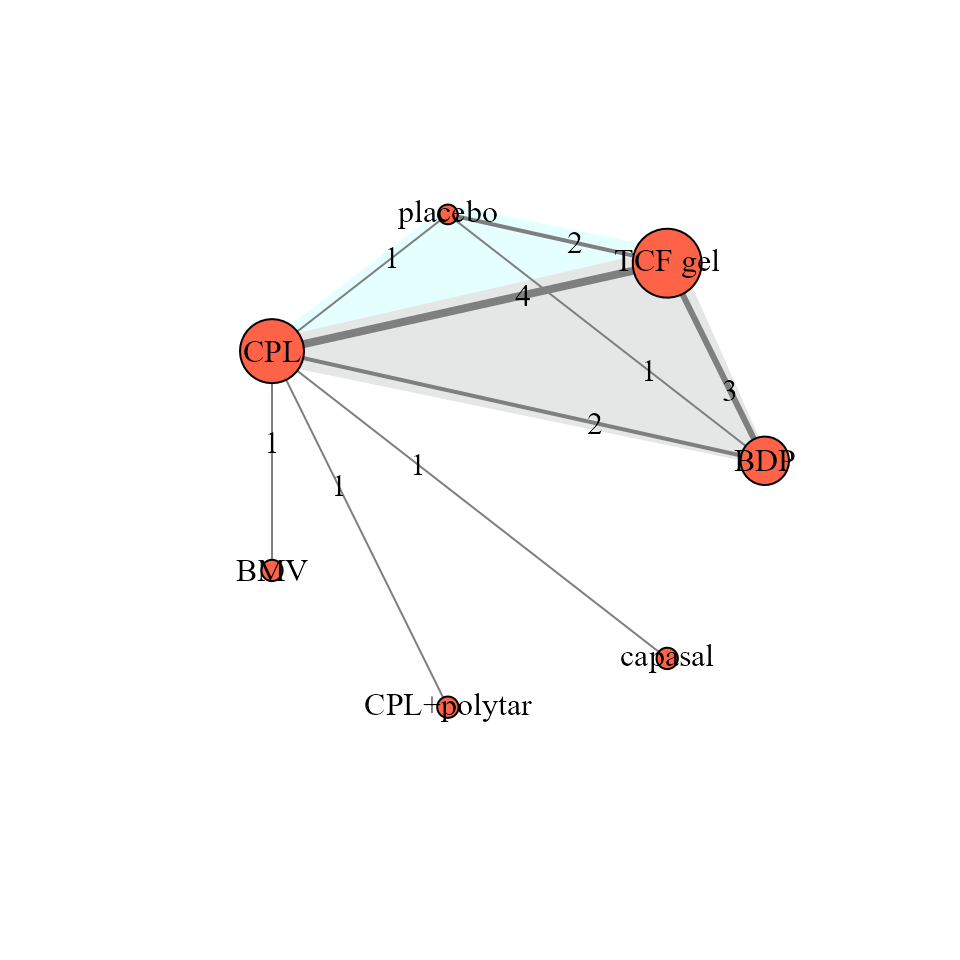
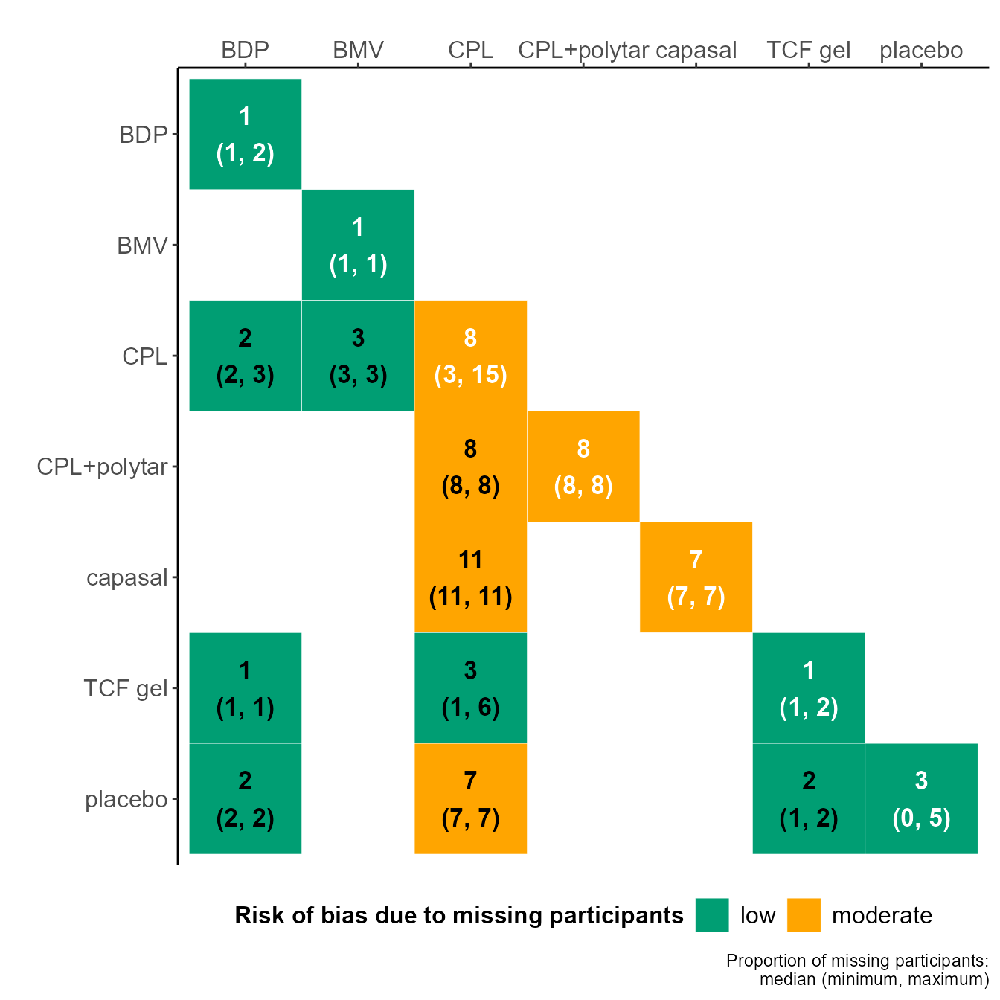

vignettes/network_description.Rmd
network_description.RmdThis vignette aims to illustrate the toolkits of the rnmamod package for the creation of the network plot and summarisation of the corresponding outcome data. If missing participant outcome data (MOD) have been extracted for all trials of the dataset, the rnmamod package facilitates visualising the proportion of MOD across the network and within the dataset.
We will use the systematic review of Bottomley et al., (2011) that comprises 9 trials comparing six pharmacologic interventions with each other and placebo for moderately severe scalp psoriasis. The analysed binary outcome is the investigator global assessment response at 4 weeks (?nma.bottomley2011).
study t1 t2 t3 t4 r1 r2 r3 r4 m1 m2 m3 m4 n1 n2 n3 n4
1 Buckley, 2008 1 6 NA NA 67 79 NA NA 2 1 NA NA 110 108 NA NA
2 Tyring, 2008 6 7 NA NA 74 12 NA NA 2 0 NA NA 135 42 NA NA
3 Kragballe, 2009 3 6 NA NA 19 114 NA NA 9 2 NA NA 105 207 NA NA
4 Luger, 2008 3 6 NA NA 101 196 NA NA 44 9 NA NA 431 419 NA NA
5 Klaber, 1994 2 3 NA NA 175 138 NA NA 2 11 NA NA 234 240 NA NA
6 Barrett, 2005 3 4 NA NA 79 79 NA NA 19 18 NA NA 225 236 NA NA
7 Klaber and McKinnon, 2000 3 5 NA NA 55 31 NA NA 35 16 NA NA 238 237 NA NA
8 van de Kerkhof, 2009 1 3 6 NA 287 74 311 NA 7 8 4 NA 563 286 568 NA
9 Jemec, 2008 1 3 6 7 304 64 362 20 6 20 8 7 556 272 541 136The dataset has the one-trial-per-row format containing arm-level data for each trial. This format is widely used for BUGS models. For a binary outcome, the dataset must have a minimum of three items:
t that refers to the intervention identifier for the corresponding (intervention) arm;r that refers to the number of observed events in the corresponding arm.n that refers to the number of randomised participants in the corresponding arm.If there is at least one trial that reports the number of missing participants per arm, we also include the item m in the dataset. If a trial reports the total number of missing participants rather than the number of missing participants per arm, we indicate with NA in the item m the arms of the corresponding trial.
In the example, the maximum number of interventions observed in a trial is four. Therefore, each element comprises four columns (e.g., t1, t2, t3, t4) to indicate the maximum number of arms in the dataset. Furthermore, all trials of the dataset reported the number of missing participants per arm; therefore, the element m appears in the dataset.
The function netplot (see ?netplot for help) creates the network plot using only two arguments: the data for the dataset (in one-trial-per-row format) and drug_names for the names of each intervention in the dataset. To obtain the network plot, netplot calls the nma.networkplot function from the pcnetmeta package.
netplot(data = nma.bottomley2011, drug_names = c("BDP", "BMV", "CPL", "CPL+polytar", "capasal", "TCF gel", "placebo"))
The intervention names in drug_names must be sorted in the ascending order of their identifier. Hence, 1 in the element t refers to BDP, (betamethasone dipropionate) 2 to BMV (betamethasone valerate), 3 to CPL (calcipotriol) and so on. See Details in ?nma.bottomley20119 for the names of the interventions.
Each node refers to an intervention and each edge refers to a pairwise comparison. The size of a node and the thickness of an edge are weighted by the number of trials that investigated the corresponding intervention and pairwise comparison, respectively.
netplot also produces a table with the characteristics of the network, such as the number of interventions, number of possible comparisons, number of direct comparisons (i.e., comparisons of interventions informed by at least one trial), and so on:
| Characteristic | Total |
|---|---|
| Interventions | 7 |
| Possible comparisons | 21 |
| Direct comparisons | 9 |
| Indirect comparisons | 12 |
| Trials | 9 |
| Two-arm trials | 7 |
| Multi-arm trials | 2 |
| Randomised participants | 5889 |
| Proportion of completers | 96 |
| Proportion of observed events | 47 |
| Trials with at least one zero event | 0 |
| Trials with all zero events | 0 |
Furthermore, netplot returns a table that summarises the number of trials, number of randomised participants and the proportion of completers (participants who completed the trial) per intervention. In the case of a binary outcome, the table additionally illustrates the distribution of the outcome as proportion across the corresponding trials:
| Interventions | Total trials | Total randomised | Completers (%) | Total events (%) | Min. events (%) | Median events (%) | Max. events (%) |
|---|---|---|---|---|---|---|---|
| BDP | 3 | 1229 | 99 | 54 | 52 | 55 | 62 |
| BMV | 1 | 234 | 99 | 75 | 75 | 75 | 75 |
| CPL | 7 | 1797 | 92 | 32 | 20 | 27 | 60 |
| CPL+polytar | 1 | 236 | 92 | 36 | 36 | 36 | 36 |
| capasal | 1 | 237 | 93 | 14 | 14 | 14 | 14 |
| TCF gel | 6 | 1978 | 99 | 58 | 48 | 56 | 74 |
| placebo | 2 | 178 | 96 | 19 | 16 | 22 | 29 |
An identical table is returned for the observed comparisons in the network:
| Comparisons | Total trials | Total randomised | Completers (%) | Total events (%) | Min. events (%) | Median events (%) | Max. events (%) |
|---|---|---|---|---|---|---|---|
| capasal vs CPL | 1 | 475 | 89 | 20 | 20 | 20 | 20 |
| CPL vs BDP | 2 | 1677 | 98 | 45 | 43 | 45 | 46 |
| CPL vs BMV | 1 | 474 | 97 | 68 | 68 | 68 | 68 |
| CPL+polytar vs CPL | 1 | 461 | 92 | 37 | 37 | 37 | 37 |
| placebo vs BDP | 1 | 692 | 98 | 48 | 48 | 48 | 48 |
| placebo vs CPL | 1 | 408 | 93 | 22 | 22 | 22 | 22 |
| placebo vs TCF gel | 2 | 854 | 98 | 56 | 49 | 53 | 58 |
| TCF gel vs BDP | 3 | 2446 | 99 | 58 | 53 | 61 | 68 |
| TCF gel vs CPL | 4 | 2829 | 96 | 46 | 37 | 45 | 54 |
The users can export all tables in xlsx file at the working directory of their project by adding the argument save_xls = TRUE in the netplot function.
When missing participants have been reported for each arm of every trial, we use the heatmap_missing_network function to illustrate the distribution of the proportion of missing participants per intervention (main diagonal) and observed comparison (lower off-diagonal) in the network (see Details in ?heatmap_missing_network).
heatmap_missing_network(data = nma.bottomley2011, drug_names = c("BDP", "BMV", "CPL", "CPL+polytar", "capasal", "TCF gel", "placebo"))
The green colour implies a median proportion of missing participant up to 5%, and hence, a low risk associated with the missing participants. The red colour implies a median proportion of missing participant over 20%, and hence, a high risk associated with the missing participants; otherwise, orange indicates a moderate risk.
In the example, most of the interventions and observed comparisons were associated with a low risk due the participant losses.
Use the heatmap_missing_dataset function To illustrate the proportion of missing participants in each arm of every trial in the dataset :
heatmap_missing_dataset(data = nma.bottomley2011, trial_names = nma.bottomley2011$study, drug_names = c("BDP", "BMV", "CPL", "CPL+polytar", "capasal", "TCF gel", "placebo"))Bottomley JM, Taylor RS, Ryttov J. The effectiveness of two-compound formulation calcipotriol and betamethasone dipropionate gel in the treatment of moderately severe scalp psoriasis: a systematic review of direct and indirect evidence. Curr Med Res Opin 2011;27(1):251–268. doi: 10.1185/03007995.2010.541022
Lifeng Lin, Jing Zhang, James S. Hodges, Haitao Chu. Performing Arm-Based Network Meta-Analysis in R with the pcnetmeta Package. J Stat Softw 2017; 80(5):1–25. doi: 10.18637/jss.v080.i05